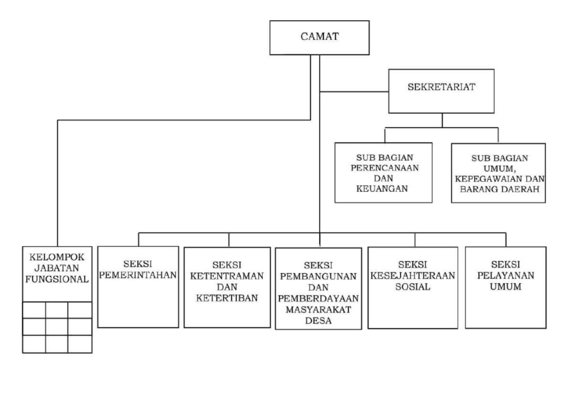

Struktur organisasi Kecamatan Binong dibentuk untuk mendukung kelancaran pelayanan pemerintahan dan masyarakat di wilayah Kecamatan Binong, Kabupaten Subang. Struktur ini terdiri dari camat, sekretaris kecamatan, serta beberapa seksi yang memiliki tugas dan tanggung jawab masing-masing dalam menjalankan pelayanan publik dan pembangunan daerah.
Camat merupakan pimpinan tertinggi di tingkat kecamatan yang bertugas mengoordinasikan seluruh kegiatan pemerintahan, pembangunan, dan pelayanan masyarakat. Dalam menjalankan tugasnya, camat dibantu oleh sekretaris kecamatan yang memiliki peran penting dalam pengelolaan administrasi, kepegawaian, dan kegiatan operasional kantor kecamatan.
Selain itu, terdapat beberapa seksi dalam struktur organisasi kecamatan seperti seksi pemerintahan, seksi pelayanan umum, seksi kesejahteraan masyarakat, serta seksi pembangunan dan pemberdayaan masyarakat. Setiap seksi memiliki fungsi khusus untuk membantu meningkatkan kualitas pelayanan kepada masyarakat secara efektif dan efisien.
Struktur organisasi Kecamatan Binong juga bekerja sama dengan pemerintah desa dalam mendukung program pembangunan daerah dan pelayanan publik. Kerja sama tersebut dilakukan untuk menciptakan koordinasi yang baik antara pemerintah kecamatan dan desa agar kebutuhan masyarakat dapat terpenuhi dengan maksimal.
Dengan adanya struktur organisasi yang jelas dan teratur, Kecamatan Binong diharapkan mampu memberikan pelayanan yang profesional, transparan, dan responsif terhadap kebutuhan masyarakat. Hal ini menjadi salah satu langkah penting dalam mendukung kemajuan dan kesejahteraan masyarakat di Kecamatan Binong.